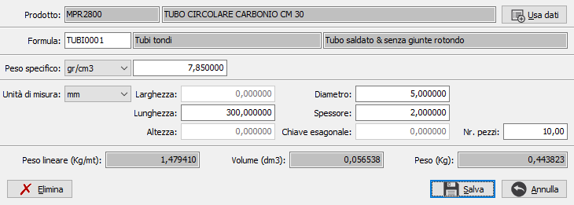

Gestione misure documenti
La gestione viene attivata dal flag "Gestione misure componenti" in configurazione produzione - scheda tecnica. Consente di utilizzare le misure associate al prodotto ed i relativi valori al fine di calcolare il fabbisogno in kg all’interno della scheda tecnica o la quantità di rigo sui documenti.
In base al prodotto vengono proposte le misure associate; tutti i dati possono essere modificati, compresa la formula; in base alla formula presente saranno attivati i relativi campi misure in modo da modificare i valori che, moltiplicati per il numero pezzi (proposto 1), determineranno il peso lineare, il volume ed il peso in KG; quest'ultimo dato sarà riportato sulla quantità del componente della scheda tecnica o sul rigo del documento.
Il pulsante Elimina consente di annullare i dati inseriti, di fatto cancellandoli; il pulsante Usa dati consente di riassegnare, previa richiesta di conferma, tutti i valori rileggendo il prodotto; di fatto saranno perdute tutte le modifiche apportate eccetto il numero pezzi.
Non sarà possibile effettuare nessuna modifica se il dettaglio misure proviene da un altro documento o se generato automaticamente da altre procedure (per esempio dalla generazione RDA da MPS).
